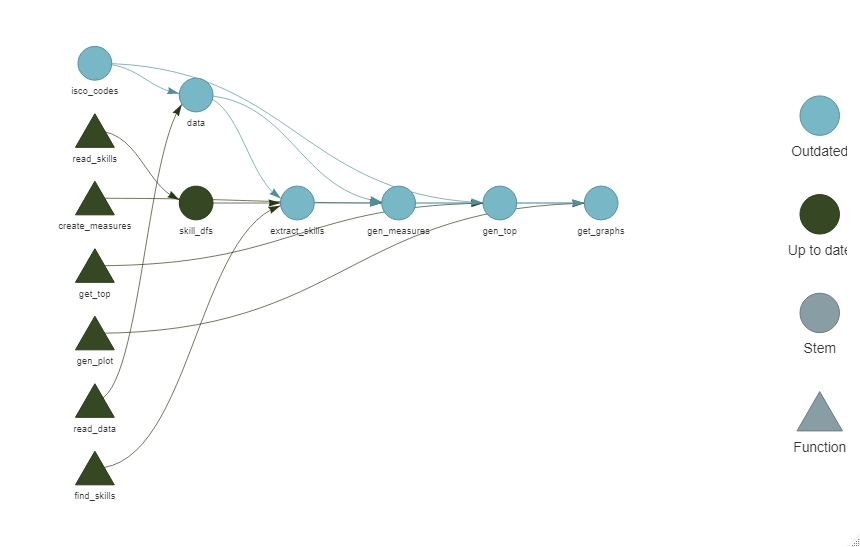
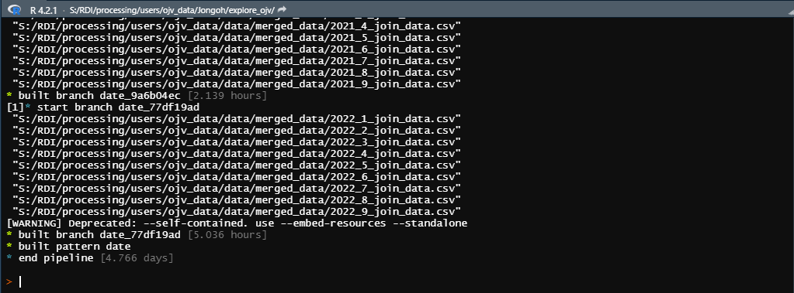
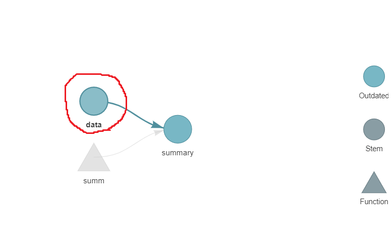

managing your coding workflow more efficiently
LISER
February 2, 2023
This training aims to teach you on how to use the targets package.
According to the {targets} R package user manual website
This training is for people who have intermediate knowledge of R programming!
You should have at least the following experiences:
you have
Let’s say I change the isco_code.
targets also allows users to automatically know how long each step and the whole process take
‘targets’ is not a package you should use every time!
Actually it is quite cumbersome to implement the package
Thus, implement only if:
If it is a one-time job it is better not to use targets package!
I strongly advise you to create an R project for your each work/research project!
Let’s create a “gapminder” project at your desktop.
Follow the section 6 of this webpage.
Using the targets package, you should create the main R script by typing the following function!
Let’s type the code lines in the R console which is the bottom left pane.
Now you should have _targets.R file in your project folder.
Do not change the name of this _targets.R file
the targets package will search and run the _targets.R file(default)
the _targets.R file should be directly placed at the project folder
Of course it is possible to change the location and the name of _targets.R file.
For this, check out the Appendix part.
Let’s open the _targets.R file
By default, it would explain the basic structure of the _targets.R file.
Let’s check the first seven lines of code.
Next, you can directly define functions here
OR
save multiple custom functions at a certain folder and call them.
Let’s assume we have created functions.R script file that has your custom functions and stored it at “…\gapminder\scripts\functions” folder.
calling packages that you would need in the whole process
Defining your whole workflow
# End this file with a list of target objects.
list(
#step 1
tar_target(data, #defining the step name
#defining what the step will do
data.frame(x = sample.int(100), y = sample.int(100))
#creating a data frame
),
#step 2
tar_target(summary, #defining the step name
#calculating the average of x & y
summ(data))
)There is a way to visualize the whole workflow
You can interact with the graph!
If you click a shape, it shows its related dependencies.
Using a data set from the gapminder package,
generating a table that contains
Let’s check how the data is organized
library(gapminder)
data <- gapminder
head(data)
"# A tibble: 6 × 6
country continent year lifeExp pop gdpPercap
<fct> <fct> <int> <dbl> <int> <dbl>
1 Afghanistan Asia 1952 28.8 8425333 779.
2 Afghanistan Asia 1957 30.3 9240934 821.
3 Afghanistan Asia 1962 32.0 10267083 853.
4 Afghanistan Asia 1967 34.0 11537966 836.
5 Afghanistan Asia 1972 36.1 13079460 740.
6 Afghanistan Asia 1977 38.4 14880372 786."Let’s create the summary table
sum.df <- data %>%
group_by(continent, year) %>%
summarise(avg_lifeExp = mean(lifeExp),
avg_gdpPercap = mean(gdpPercap)) %>%
ungroup()
head(sum.df)
" continent year avg_lifeExp avg_gdpPercap
<fct> <int> <dbl> <dbl>
1 Africa 1952 39.1 1253.
2 Africa 1957 41.3 1385.
3 Africa 1962 43.3 1598.
4 Africa 1967 45.3 2050.
5 Africa 1972 47.5 2340.
6 Africa 1977 49.6 2586."Let’s create a function that returns the sum.df
and save the function in an R script file “functions.R”
under the directory “…gapminder\scripts” folder
Let’s create the _targets.R file by typing tar_script() in the R console
First, let’s set which R script file and
which packages we will use our project
Let’s specify the steps in our project
library(targets)
#calling in the
source("scripts/functions.R")
#if you need to call different R scripts
#source("R/different_code.R")
# Set packages.
##calling in dplyr, ggplot2, gapminder packages
tar_option_set(packages = c("dplyr", "ggplot2", "gapminder"))
# End this file with a list of target objects.
list(
#reading in the gapminder data
tar_target(data,
as.data.table(gapminder::gapminder)),
#getting average life expectancy &
#average GDP per capita per continent & year
tar_target(sum_stat,
get_sum_table(data))
)Now let’s check the workflow of our project
If the _targets.R file has been wrongly set,
it would generate an error message!
If no errors were produced, let’s run the script.
You can read the files in the R studio by
Also, you can change the data format of the outputs(check the appendix part)
Now let’s start a more advanced example.
Let’s say, I would like to do an econometric analysis for each continent.
The usual way to do this is like below:
With targets you can do this automatically!
Let’s try to graph the temporal change of life expectancy of countries in each continent.
library(targets)
source("scripts/functions/pattern_functions.R")
#source("R/different_code.R")
# # configuring the script it should run(run it one time and it will create an targets.yaml file in the project folder)
# tar_config_set(script = "scripts/2._targets_pattern.R")
# Set packages.
tar_option_set(packages = c("qs", "dplyr", "stringr", "stringi", "ggplot2", "data.table", "gapminder"),
format = "qs")library(targets)
source("scripts/functions/pattern_functions.R")
#source("R/different_code.R")
# # configuring the script it should run(run it one time and it will create an targets.yaml file in the project folder)
# tar_config_set(script = "scripts/2._targets_pattern.R")
# Set packages.
tar_option_set(packages = c("qs", "dplyr", "stringr", "stringi", "ggplot2", "data.table", "gapminder"),
format = "qs")
# End this file with a list of target objects.
list(
#reading in the gapminder data
tar_target(data,
as.data.table(gapminder::gapminder)),
#getting the continents in the gapminder data
tar_target(continents,
sort(unique(data$continent))),
Do the same process for each continent!
library(targets)
source("scripts/functions/pattern_functions.R")
#source("R/different_code.R")
# # configuring the script it should run(run it one time and it will create an targets.yaml file in the project folder)
# tar_config_set(script = "scripts/2._targets_pattern.R")
# Set packages.
tar_option_set(packages = c("qs", "dplyr", "stringr", "stringi", "ggplot2", "data.table", "gapminder"),
format = "qs")
# End this file with a list of target objects.
list(
#reading in the gapminder data
tar_target(data,
as.data.table(gapminder::gapminder)),
#getting the continents in the gapminder data
tar_target(continents,
sort(unique(data$continent))),
#slicing the gapminder data by continents
tar_target(continents_data,
data[continent %in% continents],
pattern = map(continents)),
#generating a graph of showing temporal changes of life expectancy of each country in each continent!
tar_target(get_graph,
gen_graph(continents_data),
pattern = map(continents_data))
)Special thanks to Etienne Bacher for his help and slide codes!
Source code for slides:
https://github.com/jongohkim91/targets_training/blob/master/index.qmd
The {targets} R package user manual from Will Landau(The creator of ‘targets’ package)
https://books.ropensci.org/targets/
Will Landau’s Presentation at UL HPC 2021 Winter School
https://ulhpc-tutorials.readthedocs.io/en/latest/maths/R/
Will Landau’s Full Tutorial Video
targets package automatically runs _targets.R file located at the project directory
to change this,
OR
Create a _targets.yaml file at your project folder! Open a notepad, write the code lines below, and store it with the name: _targets.yaml.
changing to parquet format
#for the whole pipeline!
tar_option_set(format = "parquet") # you need to download the arrow package!
"Note that you can only have a dataframe(table) as an output for parquet!"
#for general purpose use qs instead
tar_option_set(format = "qs") # you need to download the qs package!
#for each step
tar_target(step,
print("a step"),
format = "qs")